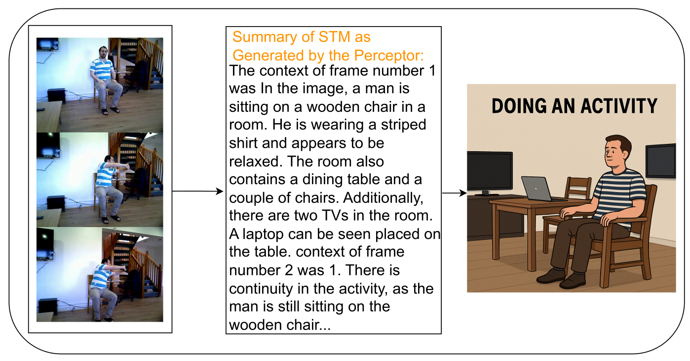

About the Paper
Towards Memory-Driven Agentic AI for Human Activity Recognition introduces a next-generation agentic AI architecture, designed to revolutionise human activity recognition (HAR) in the context of human-robot interaction (HRI). By unifying advanced sensing, context-aware reasoning, and both short- and long-term memory modules, our approach enables robots to move beyond static pattern matching—helping them dynamically interpret and adapt to human behaviours, even in unpredictable or unseen situations.
Agentic AI marks a shift from traditional, rule-based AI by allowing systems to learn continuously from experience. Our work positions agentic AI as a key enabler for flexible and socially-aware robotics, especially for assistive, collaborative, and adaptive real-world applications.
Figure 1: Overview of the proposed Agentic AI architecture. Data flows from multi-modal sensors into parallel processing streams: supervised learning (for skeleton-based HAR), environmental context extraction, and memory modules. Short-term memory (STM) captures recent activity transitions, while long-term memory (LTM) encodes experiential knowledge across sessions—enabling true adaptation.
Motivation
Human behaviours are diverse, ambiguous, and context-dependent. Traditional HAR approaches are usually "brittle"—relying on predefined models, and easily fooled by changes in viewpoint, overlapping actions, or subtle shifts in context. For example, a person reaching for a cup and simply raising their hand may look similar to a robot, but the intended action is completely different!
Our work addresses this by building in short-term memory (for activity transitions) and long-term memory (for accumulated experience), inspired by human cognitive processes. This allows the agent to reason over time and make more robust inferences.
Memory Architecture Components
- Short-term memory (STM): Aggregates information across frames to capture temporal changes and activity transitions.
- Long-term memory (LTM): Stores key experiences and contextual knowledge, allowing the system to generalise across different environments and users.
How the Architecture Works (Continual Learning and Memory-Driven Reasoning for HAR)
- Sensing Layer: Acquires multimodal data (e.g., video, skeletons) and preprocesses it for downstream analysis. We benchmarked using challenging real-world datasets: RHM (for training, with robot-centric views) and Toyota Smart Home (for out-of-distribution testing).
- Deliberative Reasoning: The heart of the system. It brings together:
- Supervised detection (M-LeNet for skeletons) – robust to known activities.
- Perceptor + LLaVA: Extracts high-level semantic descriptions from image frames, incorporating contextual cues using large vision-language models.
- Memory modules: STM tracks transitions; LTM accumulates "life-long" knowledge of activities and their contexts.
- Context Alignment (CA): This probabilistic module integrates outputs from supervised models and context extractors. By using conditional probabilities and the Jaccard Index, CA refines ambiguous predictions and enables robust recognition, especially for overlapping or ambiguous activities.
Figure 2: The context alignment module in action. The agent updates its STM as it observes a sequence of frames, allowing it to refine an ambiguous prediction ("standing up") into a more precise one ("lifting an object") by integrating context and memory.
Evaluation on Real-World HRI Datasets
We rigorously evaluated the proposed architecture on two major datasets:
- RHM: Multi-view robot-centric HAR dataset (used for training and initial validation).
- Toyota Smart Home: Large-scale, real-world dataset with challenging unseen activities (used for testing generalisation).
- On unseen data: Combining context and supervised model predictions achieved 60% accuracy—a dramatic improvement over context-only (40%) or supervised-only (35%) approaches.
- Generalisation: The agent correctly adapted to unfamiliar activities and new environments, demonstrating robustness beyond the training set.
- Activity transition awareness: STM enabled the agent to detect and track activity changes over time, a key capability for real-world HRI.
Figure 3: Generalisation example. Here, the agent revises its initial (incorrect) prediction from "cleaning" to "carrying object" as new context and STM updates become available—demonstrating cross-domain adaptability.
Why This Matters
Building trustworthy, context-aware, and adaptive AI agents is essential for the next generation of human-robot collaboration. Our memory-driven agentic AI framework advances the state of the art in several ways:
- Improves safety and reliability by reducing misinterpretation of human actions.
- Enables robots to collaborate with humans more naturally, anticipating needs and responding proactively.
- Provides a foundation for life-long learning and adaptation in robots deployed in dynamic, open-ended environments.
a) Correct prediction: The image generated by ChatGPT from STM descriptions closely matches the actual video sequence, showing successful context capture.
b) Incorrect prediction: Vague STM content leads to a poor match and low confidence in activity recognition.
Figure 4: STM-based inference comparison: these examples show the importance of rich context for accurate and trustworthy agentic AI.
Open Science & Collaboration
We believe in open research. If you are interested in collaborating, adapting our methods, or accessing the code or datasets, please feel free to contact us. Our goal is to accelerate progress towards agentic, explainable AI for real-world robotics.
Full Paper & Code
The paper will be available in the proceedings of ICSR 2025 after the conference takes place in September 2025.